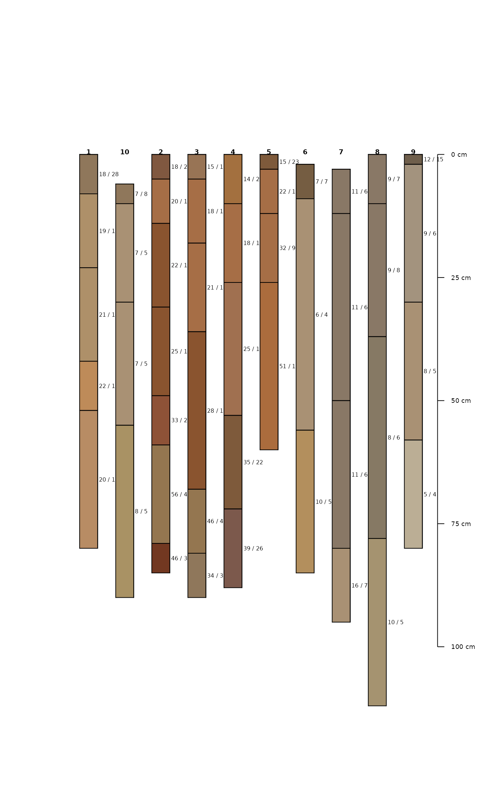
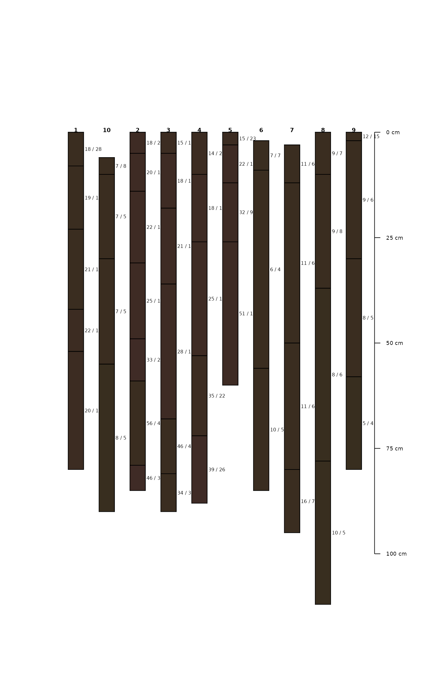

Generic function to allocate soil properties to different classification schemes.
allocate(
...,
to = c("FAO Salt Severity", "FAO Black Soil", "ST Diagnostic Features"),
droplevels = TRUE
)arguments to specific allocation functions, see details and examples
character specifying the classification scheme: FAO Salt Severity, FAO Black Soil (see details for the required ...)
logical indicating whether to drop unused levels in factors. This is useful when the results have a large number of unused classes, which can waste space in tables and figures.
A vector or data.frame object.
This function is intended to allocate a set of soil properties to an established soil classification scheme, such as Salt Severity or Black Soil. Allocation is semantically different from classification. While classification is the 'act' of developing a grouping scheme, allocation is the assignment or identification of measurements to a established class (Powell, 2008).
Each classification scheme (to argument) uses a different set of arguments.
FAO Salt Severity
EC: electrical conductivity column name, dS/m
pH: pH column name, saturated paste extract
ESP: exchangeable sodium percentage column name, percent
FAO Black Soils
object: a data.frame or SoilProfileCollection
pedonid: pedon ID column name, required when object is a data.frame
hztop: horizon top depth column name, required when object is a data.frame
hzbot: horizon bottom depth column name, required when object is a data.frame
OC: organic carbon column name, percent
m_chroma: moist Munsell chroma column name
m_value: moist Munsell value column name
d_value: dry Munsell value column name
CEC: cation exchange capacity column name (NH4OAc at pH 7), units of cmol(+)/kg soil
BS: base saturation column name (NH4OAc at pH 7), percent
tropical: logical, data are associated with "tropical soils"
ST Diagnostic Features
object: a data.frame or SoilProfileCollection
pedonid: pedon ID column name, required when object is a data.frame
hzname: horizon name column, required when object is a data.frame
hztop: horizon top depth column name, required when object is a data.frame
hzbot: horizon bottom depth column name, required when object is a data.frame
texture: soil texture class (USDA) column name
rupresblkcem: rupture resistance column name
m_value: moist Munsell value column name
m_chroma: moist Munsell chroma column name
d_value: dry Munsell value column name
BS: base saturation column name (method ??), percent
OC: organic carbon column name, percent
n_value: ??
featkind: ??
The results returned by allocate(to = "ST Diagnostic Features") currently return a limited set of diagnostic features that are easily defined. Also, the logic implemented for some features does not include all the criteria defined in the Keys to Soil Taxonomy.
Abrol, I., Yadav, J. & Massoud, F. 1988. Salt-affected soils and their management. No. Bulletin 39. Rome, FAO Soils.
FAO. 2006. Guidelines for soil description. Rome, Food and Agriculture Organization of the United Nations.
FAO. 2020. DEFINITION | What is a black soil? (online). (Cited 28 December 2020). http://www.fao.org/global-soil-partnership/intergovernmental-technical-panel-soils/gsoc17-implementation/internationalnetworkblacksoils/more-on-black-soils/definition-what-is-a-black-soil/es/
Powell, B., 2008. Classifying soil and land, in: McKenzie, N.J., Grundy, M.J., Webster, R., Ringrose-Voase, A.J. (Eds.), Guidelines for Survey Soil and Land Resources, Australian Soil and Land Survey Handbook Series. CSIRO, Melbourne, p. 572.
Richards, L.A. 1954. Diagnosis and Improvement of Saline and Alkali Soils. U. S. Government Printing Office. 166 pp.
Soil Survey Staff, 2014. Keys to Soil Taxonomy, 12th ed. USDA-Natural Resources Conservation Service, Washington, D.C.
# Salt Severity
test <- expand.grid(
EC = sort(sapply(c(0, 0.75, 2, 4, 8, 15, 30), function(x) x + c(0, -0.05, 0.05))),
pH = c(8.1, 8.2, 8.3, 8.4, 8.5, 8.6),
ESP = sort(sapply(c(0, 15, 30, 50, 70, 100), function(x) x + c(0, 0.1, -0.1)))
)
test$ss <- with(test, allocate(EC = EC, pH = pH, ESP = ESP, to = "FAO Salt Severity"))
table(test$ss)
#>
#> nonsaline slightly saline moderately saline
#> 40 30 30
#> strongly saline very strongly saline extremely saline
#> 70 90 150
#> saline-sodic slightly sodic moderately sodic
#> 780 352 198
#> strongly sodic very strongly sodic
#> 198 330
# Black Soil Category 1 (BS1)
test <- expand.grid(
dept = seq(0, 50, 10),
OC = sort(sapply(c(0, 0.6, 1.2, 20, 40), function(x) x + c(0, -0.05, 0.05))),
chroma_moist = 2:4,
value_moist = 2:4,
value_dry = 4:6,
thickness = 24:26,
CEC = 24:26,
BS = 49:51,
tropical = c(TRUE, FALSE)
)
test$pedon_id <- rep(1:21870, each = 6)
test$depb <- test$dept + 10
bs1 <- allocate(test, pedonid = "pedon_id", hztop = "dept", hzbot = "depb",
OC = "OC", m_chroma = "chroma_moist", m_value = "value_moist",
d_value = "value_dry", CEC = "CEC", BS = "BS",
to = "FAO Black Soil"
)
table(BS1 = bs1$BS1, BS2 = bs1$BS2)
#> BS2
#> BS1 FALSE TRUE
#> FALSE 20142 960
#> TRUE 0 768
# SoilProfileCollection interface
data(sp3)
depths(sp3) <- id ~ top + bottom
hzdesgnname(sp3) <- 'name'
# fake base saturation
horizons(sp3)$bs <- 75
plotSPC(sp3)

allocate(
sp3,
to = 'FAO Black Soil',
OC = 'tc',
m_chroma = 'chroma',
m_value = 'value',
d_value = 'value',
CEC = 'cec',
BS = 'bs'
)
#> peiid BS1 BS2
#> 1 1 FALSE FALSE
#> 2 10 FALSE FALSE
#> 3 2 FALSE FALSE
#> 4 3 FALSE FALSE
#> 5 4 FALSE FALSE
#> 6 5 FALSE FALSE
#> 7 6 FALSE FALSE
#> 8 7 FALSE FALSE
#> 9 8 FALSE FALSE
#> 10 9 FALSE FALSE
# make a copy and edit horizon values
x <- sp3
x$value <- 2
x$chroma <- 2
x$cec <- 26
x$tc <- 2
x$soil_color <- munsell2rgb(x$hue, x$value, x$chroma)
plotSPC(x)

allocate(
x,
to = 'FAO Black Soil',
OC = 'tc',
m_chroma = 'chroma',
m_value = 'value',
d_value = 'value',
CEC = 'cec',
BS = 'bs'
)
#> peiid BS1 BS2
#> 1 1 TRUE TRUE
#> 2 10 TRUE TRUE
#> 3 2 TRUE TRUE
#> 4 3 TRUE TRUE
#> 5 4 TRUE TRUE
#> 6 5 TRUE TRUE
#> 7 6 TRUE TRUE
#> 8 7 TRUE TRUE
#> 9 8 TRUE TRUE
#> 10 9 TRUE TRUE
# Soil Taxonomy Diagnostic Features
data(sp1)
df <- allocate(object = sp1, pedonid = "id", hzname = "name",
hzdept = "top", hzdepb = "bot", texture = "texture",
to = "ST Diagnostic Features"
)
#> Warning: the minimum dataset includes: pedonid, hzdept, hzdepb, and hzname; if texture or rupreblkcem are missing the resulting diagnostic features are inferred from the available information
#> guessing lithic contact
#> Warning: the minimum dataset includes: pedonid, hzdept, hzdepb, and hzname; if texture or rupreblkcem are missing the resulting diagnostic features are inferred from the available information
#> guessing paralithic contact
#> Warning: the minimum dataset includes: pedonid, hzdept, hzdepb, and hzname; if texture or rupreblkcem are missing the resulting diagnostic features are inferred from the available information
#> guessing densic contact
#> Warning: the minimum dataset includes: pedonid, hzdept, hzdepb, and hzname; if texture or rupreblkcem are missing the resulting diagnostic features are inferred from the available information
#> guessing petrocalcic horizon
#> Warning: ‘-’ not meaningful for factors
#> Warning: the minimum dataset includes: pedonid, hzdept, hzdepb, and hzname; if texture or rupreblkcem are missing the resulting diagnostic features are inferred from the available information
#> guessing calcic horizon
#> Warning: ‘-’ not meaningful for factors
#> Warning: the minimum dataset includes: pedonid, hzdept, hzdepb, and hzname; if texture or rupreblkcem are missing the resulting diagnostic features are inferred from the available information
#> guessing secondary carbonates
#> Warning: the minimum dataset includes: pedonid, hzdept, hzdepb, and hzname; if texture or rupreblkcem are missing the resulting diagnostic features are inferred from the available information
#> guessing mollic epipedon
#> Warning: ‘-’ not meaningful for factors
aggregate(featdept ~ id, data = df, summary)
#> id featdept.Min. featdept.1st Qu. featdept.Median featdept.Mean
#> 1 P001 89 89 89 89
#> featdept.3rd Qu. featdept.Max.
#> 1 89 89